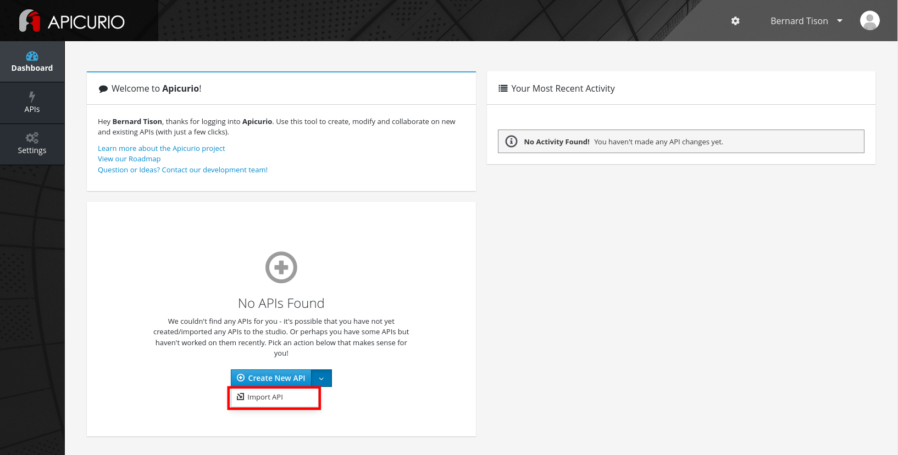
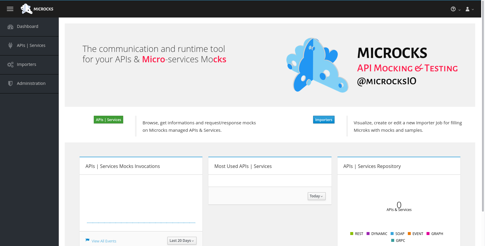
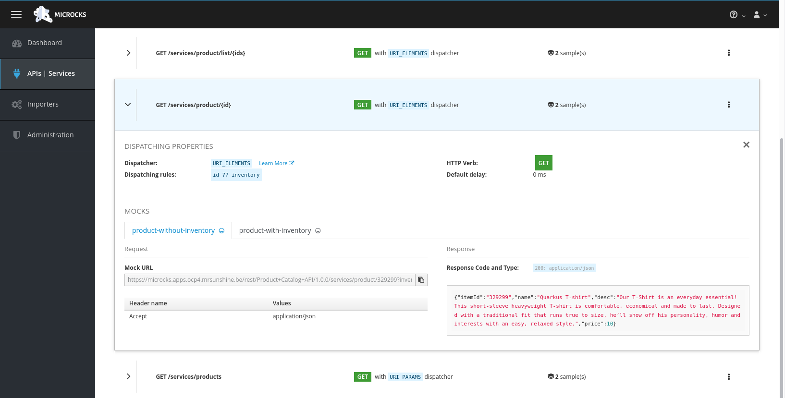
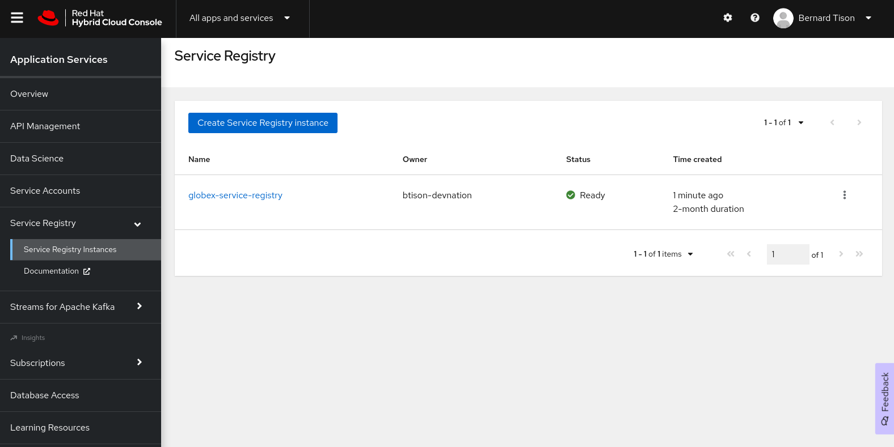

Enhancing Applications with Application Services
See the Solution in Action
2. Walkthrough guide
This section shows you how you can set up the different parts of the solution pattern, so that you can walk through the demo.
2.1. Before getting started
You will need the following pre-requisites:
-
Access to an OpenShift environment, preferably with
cluster-adminprivileges. -
A Red Hat account
-
ocOpenShift CLI -
helmHelm CLI
2.2. Step by step guide
2.2.1. API First approach
API Design with Apicurio Studio
Apicurio Studio is an environment which allows to collaboratively work on API specifications. It can be installed on OpenShift, but for this demo we use the free hosted version of Apicurio Studio.
-
In a browser window, navigate to https://studio-auth.apicur.io.
-
Register as a new user, or log in in using your Github or Google account.
You are redirected to the dashboard page. From here you can create a new API. You can also import an existing API from e.g. GitHub. -
On the dashboard page, select Import API from the Create new API drop-down box.
 -
On the Import API page, set the Import Type to Import From Source Control. Enter
https://github.com/globex-recommendation/catalog-service-api/blob/main/openapi/openapi-spec.ymlin the Url text box. Click Import API. -
You are redirected to the
Product Catalog APIfront page. This the OpenAPI spec document which describes the API to the Catalog Service of the Globex retail application.
Click Edit API to open the API Editor.
-
Navigate within the editor to inspect the different paths, data types and reusable responses that make up the API definition. You can switching between the graphical editor and the source code editor by selecting the Design ot the Source tab.
|
In a real-world scenario you would do the inverse: start with an empty API specification, and define the different elements of the spec document. You then export the spec in JSON or YAML format (by copying the contents from the source editor) to your local file system and push it to version control. |
API mocking with Microcks
API mocking allows for parallel streams of development. Developer teams that need to build applications that consume the API don’t need to wait until the implementation of the API is finished, but can develop against API mocks that return pre-canned responses.
Microcks is a web-based tool which exposes mocks based on a variety of sources, including OpenAPI spec documents. Refer to the Microcks web site for more information.
Microcks needs to be installed on your OpenShift cluster. The easiest way to do this is through the Microcks operator which is available through OperatorHub. This requires cluster admin access. If you don’t have cluster admin access, refer to the Microcks installation documentation for alternative installation methods.
-
Clone the https://github.com/globex-recommendation/catalog-service-api repository to your workstation. This repo contains the Catalog Service OpenAPI spec in the
openapifolder. -
On the OpenShift cluster, create the
microcksnamespace. -
From the OperatorHub page in the OpenShift web console, install the Microcks operator in the
microcksnamespace (The operator does not support cluster-wide installation mode). -
Deploy a
MicrocksInstallCustom Resource. The Microcks project provides a minimal Custom Resource which is sufficient for this demo.OPENSHIFT_DOMAIN=$(oc get ingresscontroller default -n openshift-ingress-operator --template='{{.status.domain}}') curl https://microcks.io/operator/minikube-minimal.yaml -s | sed "s/KUBE_APPS_URL/${OPENSHIFT_DOMAIN}/g" | oc apply -n microcks -f - -
Once the Microcks pods are running, the Microcks console can be reached at https://microcks.$OPENSHIFT_DOMAIN. Log in with
admin/microcks123 -
Microcks provides several ways to import assets for mocking, including uploading an OpenAPI spec document.
On the dashboard, click the Importers button, and on the Import Jobs page, click Upload. -
Browse to the
openapi-spec.ymlfile in theopenapifolder of the GitHub project you cloned before and click Upload to upload the document. -
On the APIs|Services page, click on the Product Catalog API link to open the service page.

-
Microcks automatically created a number of mocks based on the examples defined in the OpenAPI spec document for the different paths. Click on the path name to inspect the mocks. Every mock has a unique URL and a pre-determined response.

Publishing and managing APIs with Service Registry
Once a first version of the API specification is ready to be socialized, it can be published in a schema registry, from where other teams can search and find it.
OpenShift Service Registry is a managed cloud service which provides you with an instance of a schema registry, where you can store and manage different kind of schemas, including OpenAPI spec documents and Avro and Protobuf schemas.
|
The next steps will show you how to upload schema artifacts through the console.redhat.com UI. In a more realistic scenario this would be done automatically using the Service Registry REST API as part of a CI/CD pipeline: every time a new version is pushed to source control, a CI/CD pipeline kicks in which publishes the new version in Service Registry. |
-
Navigate to console.redhat.com and log in with your Red Hat ID and credentials.
-
On the console.redhat.com landing page, select Application Services from the menu on the left.
-
On the Application Services landing page, select Service Registry → Service Registry instances.
-
On the Service Registry overview page, click the Create Service Registry instance button. Enter a unique name like
globex-service-registryand click Create to start the creation process for your Service Registry instance. -
The new Service Registry instance is listed in the instances table. After a couple of seconds, your instance should be marked as ready.
 -
In the Service Registry instances page of the web console, select the Service Registry instance that you want to upload a schema to.
-
Click Upload artifact and complete the form to define the schema details. To upload the Product Catalog API specification, browse to the
openapi-spec.ymlfile in theopenapifolder of the GitHub project you cloned before.
-
Once the artifact is uploaded, it can be retrieved from the console.redhat.com UI ot through the Service Registry REST API. Validity and compatibility rules can be defined on a per-artifact or global level.

2.3. 2. Managed Apache Kafka Cloud Service
OpenShift Streams for Apache Kafka is a managed cloud service that enables you to add Kafka data-streaming functionality in your applications without having to install, configure, run, and maintain your own Kafka clusters.
|
The following paragraph will guide you through the setup of a managed Kafka instance through the console.redhat.com UI.
Red Hat also offers a CLI ( |
-
Navigate to console.redhat.com and log in with your Red Hat ID and credentials.
-
On the console.redhat.com landing page, select Application Services from the menu on the left.
-
On the Application Services landing page, select Streams for Apache Kafka → Kafka Instances.
-
On the Kafka Instances overview page, click the Create Kafka instance button. Enter a unique name and select the relevant Cloud region for your Kafka instance and click Create instance. This starts the provisioning process for your Kafka instance.
Your Red Hat account entitles you to one Kafka instance free of charge. This Kafka instance will stay available for 48 hrs.
-
When the instance Status is Ready, you can start using the Kafka instance.
Create a Service Account
To connect applications or services to a Streams for Apache Kafka instance, you need to create a service account.
-
On the Kafka Instances overview page, select the Options icon (the three dots) for the Kafka instance you just created. Select View connection information.
-
Copy the Bootstrap server endpoint to a secure location. You will need this when connecting to your Kafka instance.
-
Click Create service account to set up the service account. Enter a unique service account name and an optional description, and click Create.
-
Copy the generated Client ID and Client Secret to a secure location. These are the credentials that you’ll use to connect to this Kafka instance.
The generated credentials are displayed only one time, so ensure that you’ve successfully and securely saved the copied credentials before closing the credentials window.
-
After saving the generated credentials, select the confirmation check box and close the Credentials window.
Set Permissions for a Service Account
After you creating a service account to connect to a Kafka instance, you must also set the appropriate level of access for that new account in the Access Control List (ACL) of the Kafka instance. Streams for Apache Kafka uses ACLs provided by Kafka that enable you to manage how other user accounts and service accounts are permitted to interact with the Kafka resources that you create.
-
On the Kafka Instances page, click the name of the Kafka instance you previously created.
-
Click the Access tab to view the current ACL for this instance.
-
Click Manage access, use the Account drop-down menu to select the service account that you previously created, and click Next.
-
Under Assign Permissions, use the drop-down menus to set the permissions shown in the following table for this service account. Click Add to add each new resource permission.
These permissions enable applications associated with the service account to create and delete topics in the instance, to produce and consume messages in any topic in the instance, and to use any consumer group and any producer.
Table 1. ACL permissions for a new service account Resource type
Resource identifier and value
Access type
Operation
TopicIs=*AllowAllConsumer groupIs=*AllowReadTransactional IDIs=*AllowAll
Create a Kafka Topic in OpenShift Streams for Apache Kafka
The activity tracking functionality of the Globex retail web-site application uses a Kafka topic to store the events generated by the user activity on the web site. This topic needs to be created ahead of time.
-
In the Kafka Instances page of the web console, click the name of the Kafka instance that you want to add a topic to.
-
Select the Topics tab, click Create topic, and follow the guided steps to define the topic details. Click Next to complete each step and click Finish to complete the setup.
-
Topic name:
globex-tracking. -
Partitions:
1 -
Message retention: Keep the defaults.
-
2.3.1. 3. Inner Development Loop
The inner development loop is the single developer workflow, where a developer works on a piece of functionality or a bug fix in an application. The developer typically writes code on an IDE on his laptop, tests the code locally and debugs if necessary, all this in an iterative fashion. Once the piece of functionality is deemed ready, the developer pushes the changes into the source control system. That’s where the outer loop kicks in. In the outer loop the code is built, integration tests are run, container images are built and deployed to the target container platform.
One of the major challenges developers face in the inner loop, is the management of dependencies. Almost every application, monolithic or based on microservices, has one or more services it depends on, like a database or a messaging platform. In the case of microservices, a service can also depend on other services. So even when developing locally, those dependencies must somehow be available to the developer.
Several approaches are possible to tackle this problem: use Docker or Docker Compose to run the dependencies locally, or spin up a local Kubernetes cluster with Minikube or Kind and deploy the services in that local Kubernetes cluster. Or you can try to mock up all the dependent services. Some frameworks like Quarkus have taken it a step further and support the automatic provisioning of containerized services like a database or a Kafka cluster in development and test mode.
An alternative is to deploy the dependencies on a remote OpenShift cluster, and develop locally while pointing the application under development to the dependent services running on OpenShift.
Our example uses a Helm chart to easily deploy all the components of the Globex retail application to OpenShift. For the services that rely on Kafka, we’ll use the managed Kafka instance we created earlier.
-
Clone the https://github.com/globex-recommendation/globex-recommendation-helm repository to your workstation. This repo contains helm charts for the different components of the Globex retail web application.
-
Create a file
values.yamlin the root of the project. Set the content of the file to:kafka: bootstrapServer: &kafka-bootstrap <kafka bootstrap server> userId: &kafka-user-id <service account user id> password: &kafka-user-secret <service account user secret> recommendation-engine: kafka: bootstrapServer: *kafka-bootstrap userId: *kafka-user-id password: *kafka-user-secret activity-tracking: kafka: bootstrapServer: *kafka-bootstrap userId: *kafka-user-id password: *kafka-user-secretReplace the
<kafka bootstrap server>placeholder with the bootstrap address of the managed Kafka instance, and<service account user id>and<service account user secret>with the user ID and the user secret of the service account you created for the managed Kafka instance. -
Create a namespace in OpenShift for the deployment:
oc create namespace globex-dev -
Deploy the application with Helm:
helm install --dependency-update -n globex-dev -f values.yaml globex globex -
Check the deployment progress on the Openshift console. Once all the pods are deployed, the topology in the Developer perspective of the
globex-devnamespace should look like:
Let’s say that as a developer you need to work on the Activity Tracking Service. This service exposes a REST endpoint for posting user activity events. These events are sent to the globex.tracking Kafka topic.
The developer workflow would look like:
-
Clone the https://github.com/globex-recommendation/activity-tracking-service repository to your workstation. This repository contains the code of the Activity Tracking Service and uses Quarkus.
-
Import the code in your favorite IDE
-
The Activity Tracking Service has a dependency on the Kafka broker. So the local copy of the application needs to be configured to point to the managed Kafka instance you created earlier. One way to do so is to add the connection details to the
devprofile properties insrc/main/resources/application.properties.
An alternative is to create an.envfile in the root of the project, which will be picked up when running the application in dev mode. The advantage is less risk of committing this file (which contains connection credentials) to source control.-
Create a file called
.envin the root of the project. -
Set the contents of the file to:
mp.messaging.outgoing.tracking-event.bootstrap.servers=<kafka bootstrap server> mp.messaging.outgoing.tracking-event.topic=globex.tracking mp.messaging.connector.smallrye-kafka.security.protocol=SASL_SSL mp.messaging.connector.smallrye-kafka.sasl.mechanism=PLAIN mp.messaging.connector.smallrye-kafka.sasl.jaas.config=org.apache.kafka.common.security.plain.PlainLoginModule required \ username="<service account user id>" \ password="<service account user secret>" ;
Replace the
<kafka bootstrap server>placeholder with the bootstrap address of the managed Kafka instance, and<service account user id>and<service account user secret>with the user ID and the user secret of the service account you created for the managed Kafka instance.
-
-
From a terminal window, start the application in dev mode:
mvn quarkus:dev
Quarkus dev mode supports live-reload of the application code. So when you change the code, it is automatically reloaded when you do a HTTP call to the application - no need to continuously start and stop the application. Other benefits include opening a port for attaching a debugger, continuous testing and the Dev UI available at
/q/dev.